UDN
Search public documentation:
LightmassTools
日本語訳
中国翻译
한국어
Interested in the Unreal Engine?
Visit the Unreal Technology site.
Looking for jobs and company info?
Check out the Epic games site.
Questions about support via UDN?
Contact the UDN Staff
中国翻译
한국어
Interested in the Unreal Engine?
Visit the Unreal Technology site.
Looking for jobs and company info?
Check out the Epic games site.
Questions about support via UDN?
Contact the UDN Staff
UE3 Home > Lighting & Shadows > Lightmass Tools
UE3 Home > Level Designer > Lightmass Tools
UE3 Home > Lighting Artist > Lightmass Tools
UE3 Home > Level Designer > Lightmass Tools
UE3 Home > Lighting Artist > Lightmass Tools
Lightmass Tools
Document Changelog: Created by Daniel Wright.
Overview
Tools
StaticMesh Lighting Info
This dialog allows for the user to make quick comparisons of vertex vs. texture mapping on their static meshes. It also provides a simple way to quickly switch large numbers of meshes between the two. Select 'StaticMesh Lighting Info' from the UnrealEd 'View' > 'Lighting Info' menu to open the dialog. 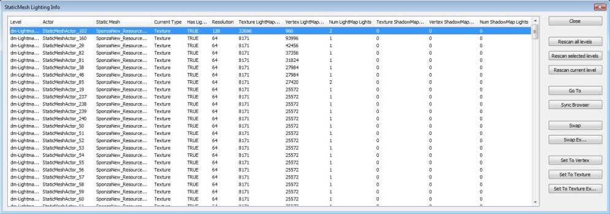Buttons
- Close - Closes the dialog.
- Rescan all levels - Rescans all levels in the map for static meshes and inserts into the list.
- Rescan selected levels - Rescans the levels selected in the Level Manager tab for static meshes.
- Rescan current level - Rescans only the current levels for static meshes.
- Go To - Jumps to the selected meshes in the level.
- Sync Browser - Syncs the content browser to the selected meshes source StaticMesh.
- Swap - Swaps the mapping method of the selected entries.
- Swap Ex... - Swaps the mapping method of the selected entries, prompting the user for a resolution to override with for texture mapping.
- Set to Vertex - Sets the selected entries to use Vertex mapping.
- Set to Texture - Sets the selected entries to use Texture mapping.
- Set to Texture Ex... - Sets the selected entries to use Texture mapping, prompting the user for a resolution to override with.
Columns
- Level - the level the static mesh actor is in.
- Actor - the name of the static mesh actor.
- Static Mesh - the source static mesh for the actor.
- Current Type - the current mapping type used for the entry (vertex or texture).
- Has Lightmap UVs - indicates if the mesh has lightmap UVs or not.
- Resolution - the resolution used to calculate the texture light/shadow map memory used.
- Texture LightMap (Bytes) - the amount of memory the mesh would use if it is/were using texture mapped lightmaps.
- Vertex LightMap (Bytes) - the amount of memory the mesh would use if it is/were using vertex mapped lightmaps.
- Num LightMap Lights - the number of lights contributing to the generation of lightmaps on the mesh.
- Texture ShadowMap (Bytes) - the amount of memory the mesh would use if it is/were using texture mapped shadowmaps.
- Vertex ShadowMap (Bytes) - the amount of memory the mesh would use if it is/were using vertex mapped shadowmaps.
- Num ShadowMap Lights - the number of lights contributing to the generation of shadowmaps on the mesh.
Lighting Build Info
The LightingBuildInfo dialog presents information about the last completed lighting build to assist in tracking down 'problem assets'. It displays the following information:Lighting Timings
In the following screen capture of Swarm after a lighting build, you can see that there were some mappings that took longer than others. 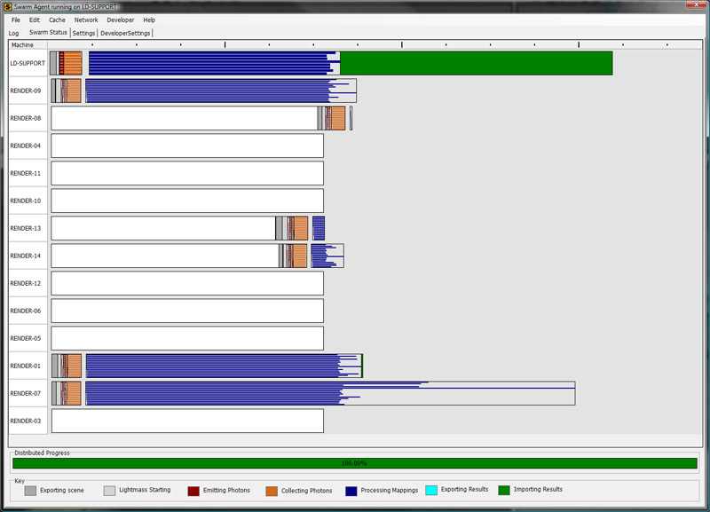 This is evidenced by the longer blue 'Processing Mappings' lines. In this case, the '% Lighting Time' column of the Lighting Build Info dialog can come in handy tracking down the objects that are causing problem. To open the dialog, select 'Lighting Build Info' from the 'View->Lighting' menu of UnrealEd.StaticMesh example
The following example shows the Lighting Build Info dialog after building lighting on LightmassDayBright. 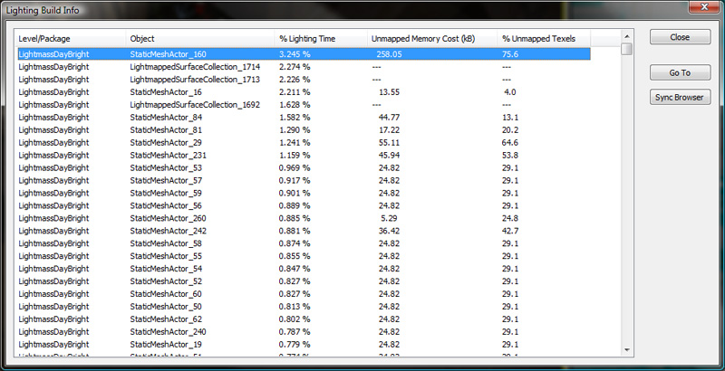 The '% Lighting Time' displays the percentage of the overall lighting time each mapping took. In this example, the highest percentage was taken by StaticMeshActor_160. Double-clicking the entry will bring you to the offending mesh in the level. 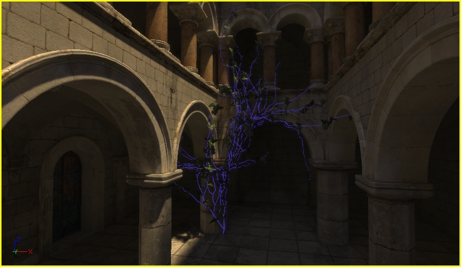 With the object selected, we can look at its properties to determine if the problem lies there: 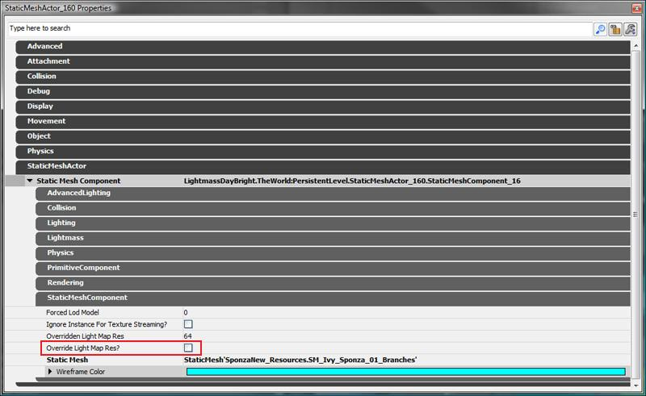 The highlighted property, bOverrideLightMapRes, is not checked. This indicates that the source StaticMesh controls the resolution. Looking at the properties for 'SponzaNew_Resources.SM_Ivy_Sponza_01_Branches' we see: 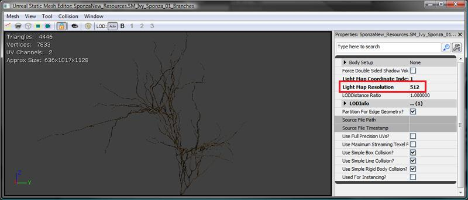 We can see that the LightMapResolution for this static mesh is rather high - 512. Since the StaticMesh could be used by other objects in the scene, we can fix this by overriding the lightmap resolution on the StaticMeshComponent. Checking the bOverrideLightMapRes option and setting the OverriddenLightMapRes value to 128 gives the following change in timing: 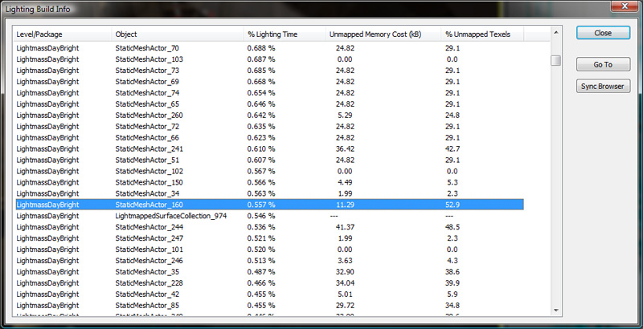Lightmapped Surface Collections
When building lighting, the engine will merge different BSP pieces together for generating lightmaps in order to reduce lightmap seams on coplanar surfaces. To reflect this in the Lighting Build Info dialog, a temporary object is created that represents the collection of brushes that contributed to that mapping. This object is a LightmappedSurfaceCollection. Double-clicking (or pressing the 'Go To' button) one of these entries results in the following selection in the editor viewport: 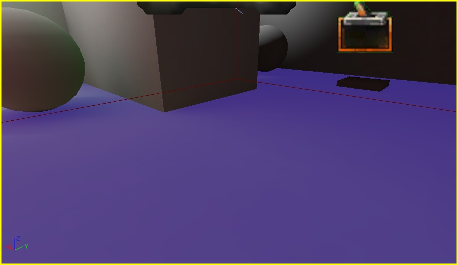 While this may look like a single BSP section being selected, it is in fact three different surfaces, shown below highlighted in different colors. 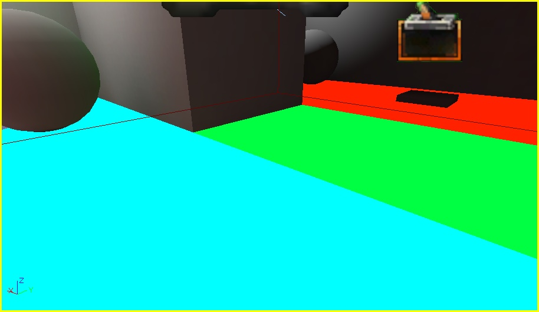 To reduce the time taken to build lighting for the lightmap surface collection, either lower the resolution on the surfaces or force them to build lighting separately by giving them slightly different LightmassSettings, for example give one a DiffuseBoost of 1.0 (the default) and an adjacent one a DiffuseBoost of 1.001.Unmapped Texels and Memory Cost
The Lighting Build Info dialog contains two additional columns that also contain useful memory for tracking down inefficient lightmaps.The 'Unmapped Memory Cost (kB)' column shows the amount of memory wasted by unmapped texels for the object.
The '% Unmapped Texels' column shows the percentage of texels for the object lightmap that are unmapped. As an example, after building lighting on VCTF-Sandstorm, open the 'Lighting Build Info' dialog and click on the 'Unmapped Memory Cost (kB)' column to sort by memory cost values from highest to lowest. The following is results: 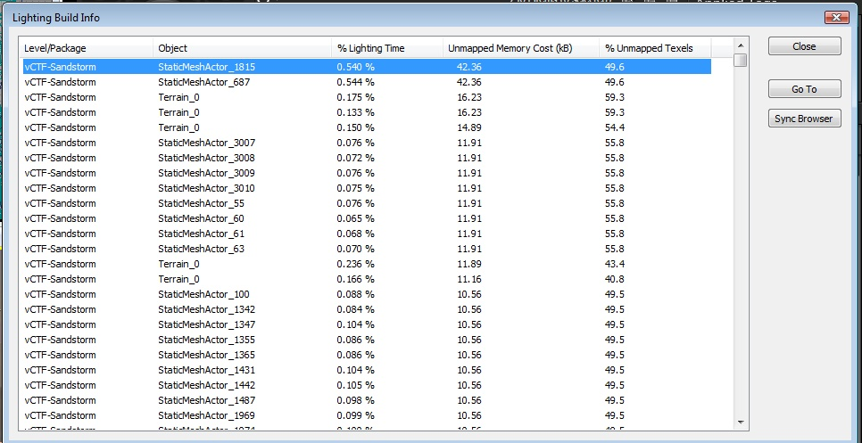 Jumping to the object in the scene, we see the following: 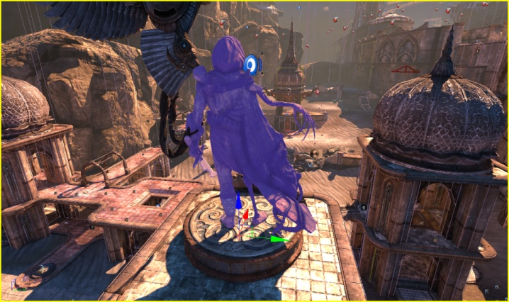 Right-clicking the static mesh and selecting 'Find in content browser' will select the StaticMesh for this actor in the Content Browser. Opening it in the Static Mesh Editor and enabling the UV overlay, we see: 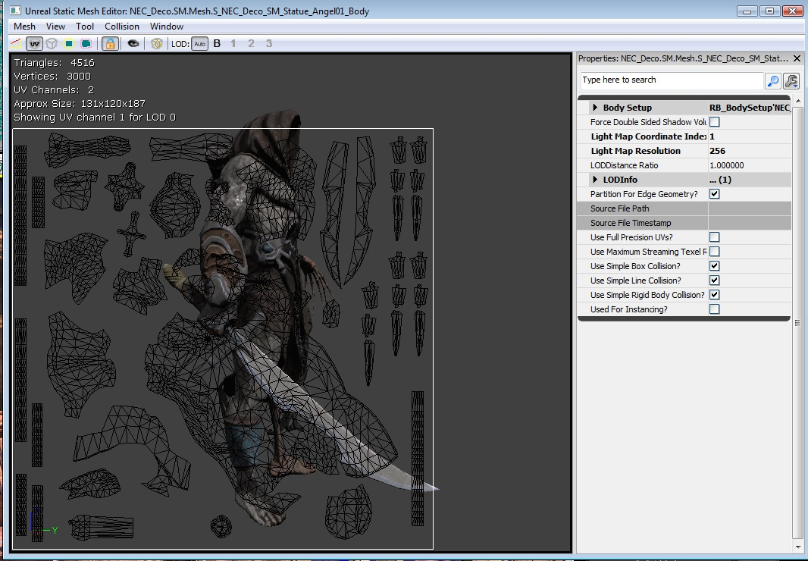 As you can see, there is quite a bit of waste in this layout - almost 50% of the space in the UV-overlay is empty. Fixing up the Lightmap UVs for this mesh will result in more efficient usage of light map memory.
Troubleshooting
Lightmap error colors
When Lightmass encounters a content error in Preview or Medium quality builds, it overrides the lightmap's color with an error color. In High or Production quality builds, Lightmass will skip the error coloring and calculate the lighting as if there was no error, which may have unexpected results. Non-unique lightmap UV's - affected texels will be orange. This means more than one triangle overlaps with the texel's center, so the texel can't be lit correctly, because it is setup to be in two places at once. The solution is to either fix the artist created lightmap UV's or generate new UV's in the static mesh editor, and set LightMapCoordinateIndex appropriately. On the left, the orange color that is assigned to texels with non-unique lightmap UV's. In the middle, a different mesh with non-unique UVs showing how all 6 cube faces are overlapping in UV space. On the right, a similar mesh with correct unique UV's, no triangles overlap in UV space. 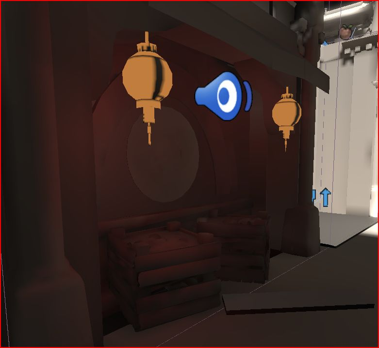 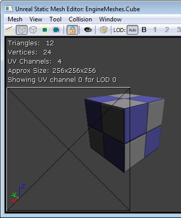 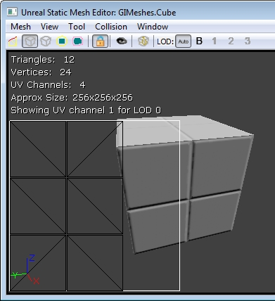 Wrapping lightmap UV's - affected texels will be green. This happens when the static mesh's lightmap UV's are not all within the range [0, 1], which means they are wrapping. The solution is to either fix the artist created lightmap UV's or generate new UV's in the static mesh editor, and set LightMapCoordinateIndex appropriately. 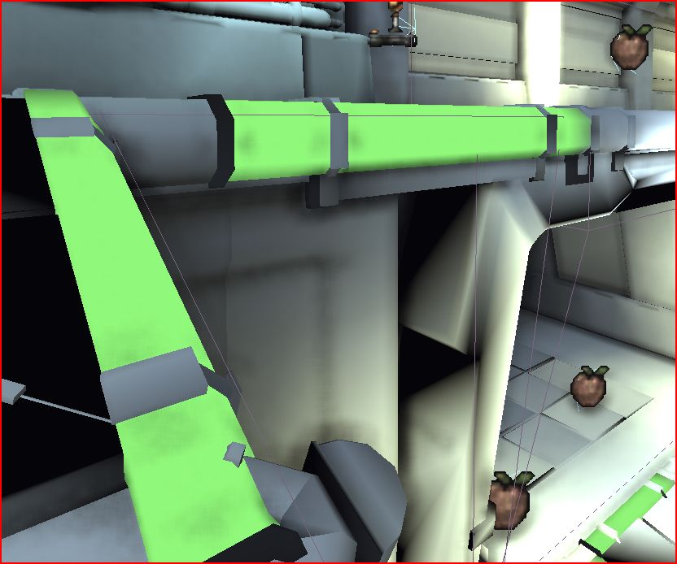 Unmapped texels on static meshes - Yellow texels on static meshes are usually a sign that the underlying triangles are degenerate (zero-area) in lightmap UV space. This means two or more of the triangle's vertices had the same lightmap UV, and the triangle has zero lightmap area. It's fine to setup the lightmap UV's like this to save texture space, just keep in mind that the lighting will be wrong on those triangles. 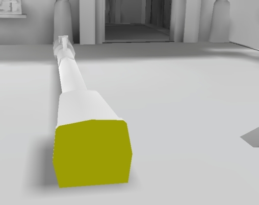 Unmapped texels on BSP - Yellow texels on BSP indicates that the resolution on the BSP is too low, and not even a single texel was detected to lie on the BSP triangles. Open the BSP surface's properties (F5) and change Lightmap Resolution to a lower number (which results in more lightmap texels). 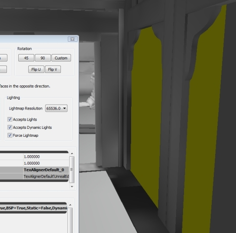Generating Unique Lightmap UV's
Below is an example of non-unique lightmap UV's and unique lightmap UV's as shown in the static mesh editor. Non-unique lightmap UV's will not display correct lighting with old UE3 static lighting or Lightmass. This can be easily fixed by generating unique lightmap UV's in the static mesh editor. To do this, select Generate Unique UV's under the the Mesh menu. In the options window that pops up, select a UV channel that is not being used (usually the last number in the dropdown). Hit the OK button to generate the UV's. Now you must set the mesh to use those UV's by setting the LightMapCoordinateIndex to the number for the UV channel that was just generated. The UV's can be viewed using the Show UV Overlay window mode. Also make sure that you set a LightMapResolution for the static mesh. This can be set in the static mesh editor, or on a per object basis in the individual primitive component properties. Non-unique lightmap UVs on the Left, generated unique lightmap UVs on the right. Notice that no two triangles overlap in the right UVs, which means they are unique. 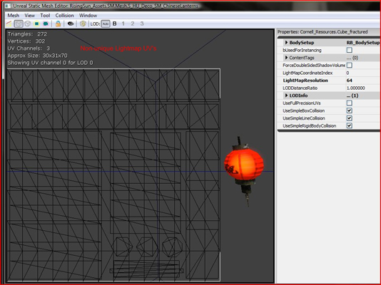 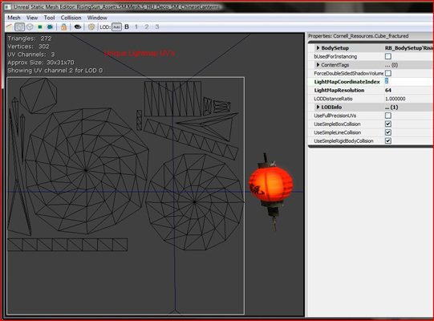 See also LightMap Unwrapping for tips on unwrapping meshes for lightmaps. Note that lightmap UVs can typically be laid out much better in both quality and efficiency when done manually by an artist in a modelling package like 3ds Max.Material Expression Caveats in Lightmass Material Generation
Material attributes are exported to Lightmass, but only one version of the material will be exported regardless of what meshes it is applied to. This means mesh-specific material expressions like VertexColor and Transform will not have correct values. View or time dependent expressions like CameraVector, DestColor and GameTime also cannot be captured correctly. These material expressions will compile to constant values due to the fact that they will not generate meaningful/correct values when Lightmass exports the material attributes. Use the bVisualizeMaterialDiffuse WorldInfo option to override lightmaps with just the material diffuse for debugging. Note that lightmaps in the lighting only viewmode are scaled by LightingOnlyBrightness from BaseEngine.ini. Set this to (1,1,1) (requires editor restart) to get exported material diffuse color stored in lightmaps to match up with the real material diffuse. Also make sure all relevant DiffuseBoosts (per-Primitive and per-Level) are set to 1.0. Then you can switch between them in the editor by switching between the Unlit view mode (which only shows Emissive + Diffuse) and Lighting Only. The left screenshot shows the Unlit mode, and the right shows Lighting Only when built with bVisualizeMaterialDiffuse checked. 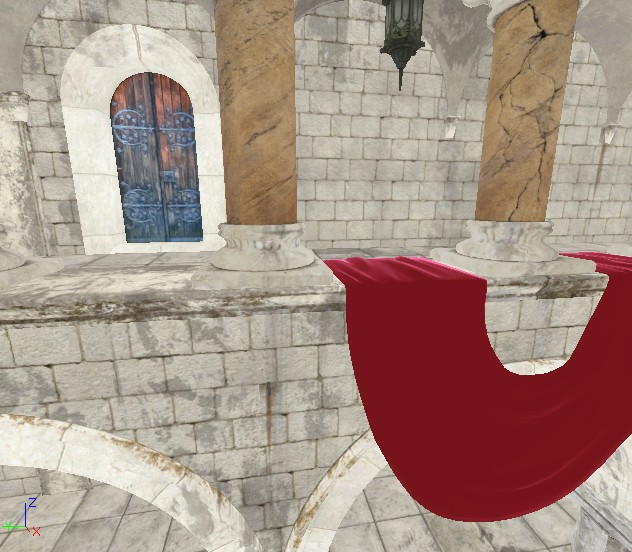 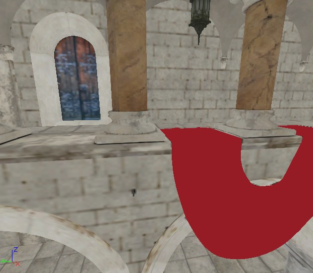 When you have a material that does not export correctly, use the Lightmass Replace material node to export a different version of the material for building lighting. The following chart details what expression that cannot be exported correctly will compile to:| Expression | Compiles to... |
|---|---|
| SceneDepth | 0.0f |
| DestColor | (0.0f,0.0f,0.0f) |
| DestDepth | 0.0f |
| DepthBiasedAlpha | SourceAlpha |
| SceneTexture | (0.0f,0.0f,0.0f) |
| WorldPosition | (0.0f,0.0f,0.0f) |
| CameraWorldPosition | (0.0f,0.0f,0.0f) |
| CameraVector | (0.0f,0.0f,1.0f) |
| LightVector | (1.0f,0.0f,0.0f) |
| ReflectionVector | (0.0f,0.0f,-1.0f) |
| Transform | The input vector untouched |
| TransformPosition | The input vector untouched |
| VertexColor | (1.0f,1.0f,1.0f,1.0f) |
| VertexColor w/ bUsedWithSpeedTree | (1.0f,1.0f,1.0f,0.0f) |
| RealTime | 0.0f |
| GameTime | 0.0f |
| FlipBookOffset | (0.0f, 0.0f) |
| LensFlareIntesity | 1.0f |
| LensFlareOcclusion | 1.0f |
| LensFlareRadialDistance | 0.0f |
| LensFlareRayDistance | 0.0f |
| LensFlareSourceDistance | 0.0f |